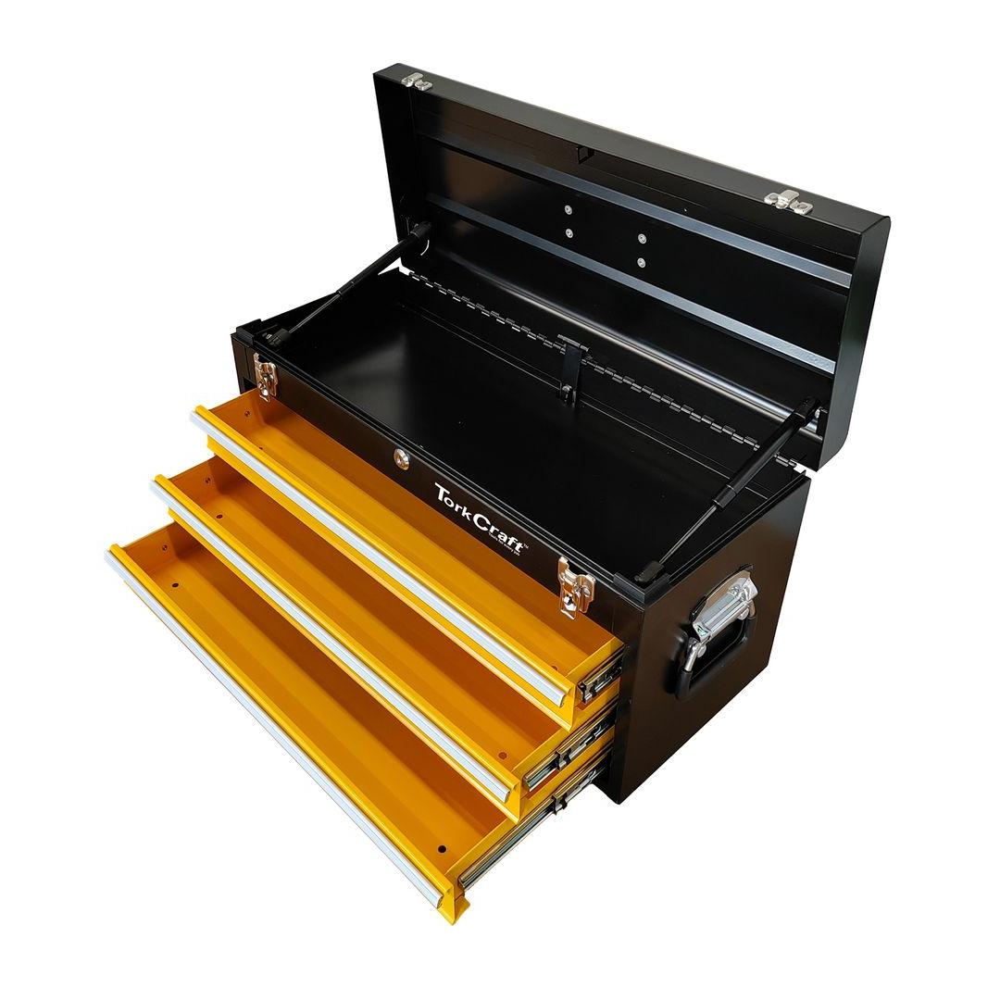
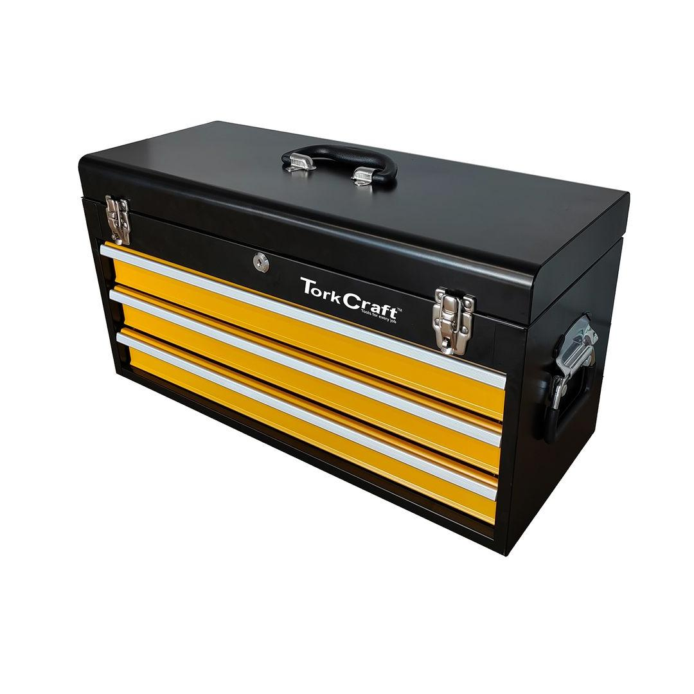

TCTB005
3297.05


Toolbox Dimensions: 600(L) x 270(W) x 320mm(H)
This versatile and practical Top Box Empty unit provides ample storage space for your workshop or garage. Featuring three sturdy drawers and a spacious top tray, this unit offers organized storage for a variety of tools, equipment, and supplies.
The drawers glide smoothly on durable runners, ensuring easy access to your belongings. The top tray provides a convenient surface for small tools or frequently used items. Made from high-quality materials, this Top Box Empty is built to last and withstand the demands of a busy workshop environment.
Application: